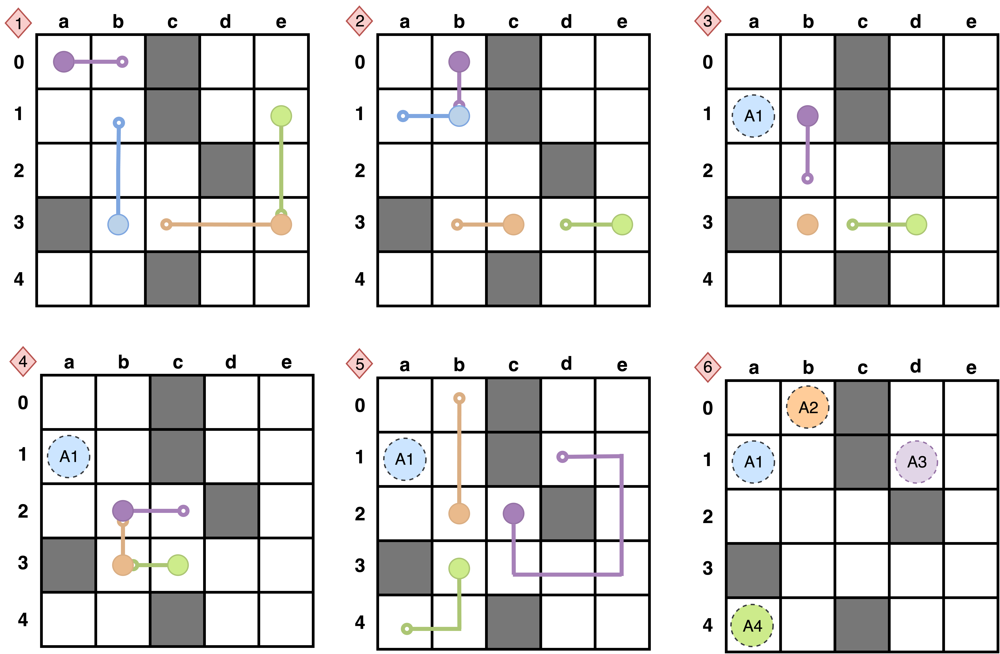

Provenance Walkthrough
How Plans Evolve
maPO models replanning as a provenance-preserving transformation: each ResolvedSubPlan remains linked to the OriginalSubPlan, the CollisionEvent that invalidated it, and the ConflictAlert that initiated repair.

The segmented storyboard turns one joint execution into a short sequence of collision-free snapshots.
Figure 4. Plan-segmentation based visual explanation: the joint plan is decomposed into sequential, collision-free snapshots that can be inspected for safety.
OriginalSubPlan
The initial route stays preserved after replanning.
↓
CollisionEvent
The ontology records type, time, location, and agents for the event that broke the path.
↓
ConflictAlert
The alert identifies which agent replans and why.
↓
ResolvedSubPlan
The new route points back to the original path and the conflict it resolves.
This is the missing MAPF audit trail: the graph stores what changed, what caused it, and which segment was replaced.
maPO · AAAI 2026 MAKE
09 / 15